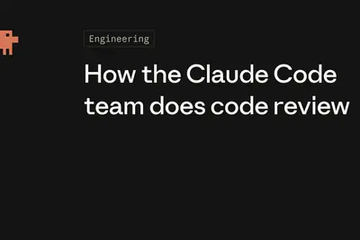
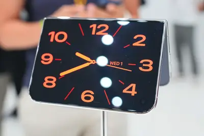
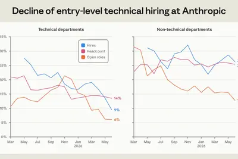
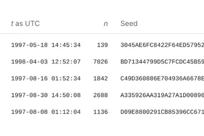
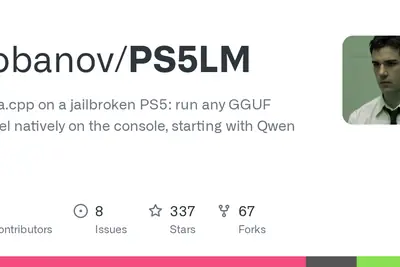
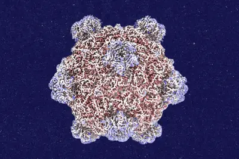
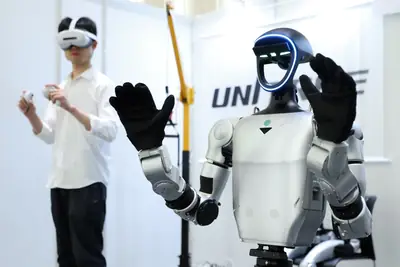
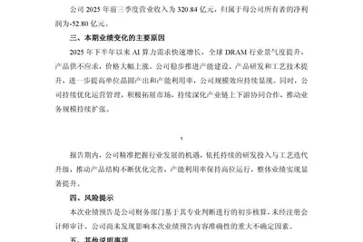
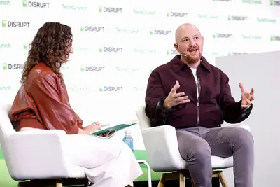

AI 每日新聞彙整
全部主題
其他
Apple、Meta 罕見攜手！8,160 億參數 AI 模型登上 Mac Studio，雙方為何放下多年恩怨？
Meta 首席 AI 負責人 Alexandr Wang 更以一句「我們很高興看到爸爸媽媽終於又能好好相處了」，形容 Meta 與 Apple 這次合作。
- Hacker News (100+) Apple ML Research: Muse Spark Open with MLX on Mac Studio
- TechOrange 科技報橘 Meta 推美最強開放模型 Muse Spark Open，8,160 億參數為何兩台 Mac 就能跑？
- INSIDE Apple、Meta 罕見攜手！8,160 億參數 AI 模型登上 Mac Studio，雙方為何放下多年恩怨？
Quoting Addy Osmani, Morgan Westlee Lunt, and Qing Wang
We think "did a human read the code?" is an imprecise proxy for "what could go wrong with this change, and which check—automated or human—is the right one to catch it?" Asking that question also changed when review happens. Before, review was a gate at the end of the road: write

- Simon Willison Quoting Addy Osmani, Morgan Westlee Lunt, and Qing Wang
- Hacker News (100+) How the Claude Code team does code review
Have a Meta business account? You’re consenting to AI scraping now, legal experts say
And there’s no opt-out available.
Want an iPhone Duo before 2027? Don’t preorder from Apple – try this instead
Estimates for Duo preorders are now showing a ship date of late January, marking a new wait time record for Apple and its customers.

NVIDIA RTX Spark 发售，华硕、联想、微软、微星多款笔电开放购买
IT之家 10 月 16 日消息，基于 NVIDIA（英伟达）RTX Spark 超级芯片平台的设备即将发售， 华硕、联想、微软、微星等厂商均将开放产品购买 。感兴趣的IT之家小伙伴可 前往了解 。 华硕 ProArt 创 14 20C + 6144CUDA + 128GB + 1TB，35999 元 20C + 6144CUDA + 32GB + 1TB，18999 元 京东 华硕 ProArt 创 14 RTX Spark 18999 元起 直达链接 华硕 ProArt 创 16 20C + 6144CUDA + 128GB + 1TB，37999
苹果 App Store 新规落地，AI 深度伪造迎来最严审核
IT之家 10 月 17 日消息，苹果公司昨日（10 月 16 日）更新《App 审核指南》，在最新修订的 1.2 条款中，加强治理针对 AI 内容创作类应用， 将 AI 生成的、未经当事人同意的私密图像明确纳入禁止范围。 IT之家附上修订内容如下： 1.2 用户生成内容 对于包含用户生成内容的 App，有特定的难题需要解决，比如知识产权侵权、 未经同意传播私密图像 、匿名欺凌等。为了避免滥用，包含用户生成内容或社交网络服务的 App 必须满足以下条件： 采用相应的方法来过滤令人反感的内容，以免这些内容在 App 中发布 制定一个机制，以举报攻击性内容并
Anthropic 内部调查：大多数员工相信到 2030 年 AI 能完成至少八成工作
IT之家 10 月 17 日消息，据《商业内幕》今天（17 日）早间报道，Anthropic 员工普遍认为，AI 将取代自己大部分工作，绝大多数美国劳动者则持不同看法。 Anthropic 最新研究对比了 美国成年人和 1334 名公司员工 的调查结果。大多数 Anthropic 员工预计，到 2030 年，自己 至少 80% 的工作可以交给 AI 完成 ，而美国劳动者中只有约 5% 的人持相同看法。 研究反映出 Anthropic 员工与普通美国人对 AI 未来发展的判断存在巨大差异。对于 AI 能力的进步速度、节省工作时间的效果，以及未来经济增长的速
英监管机构拟认定微软商业软件“垄断地位”，或干预旗下产品捆绑销售
IT之家 10 月 17 日消息，据路透社 16 日报道，英国竞争与市场管理局拟认定微软在商业软件市场具有“战略市场地位”，此举可能使监管机构 有权干预微软将 Excel、Teams 及 AI 助手 Copilot 等产品捆绑销售的做法 。 今年 5 月，英国竞争与市场管理局开始调查微软在商业软件市场的地位是否妨碍竞争。 据悉，微软的商业软件在英国每月 约有 2000 万用户 。 监管机构当天指出，微软在 PC 操作系统以及办公、安全、服务器和数据库管理软件市场均占据强势地位，客户转用其他供应商的产品时面临诸多障碍，进一步巩固了微软的市场优势。 微软发言
Anthropic 报告：AI 工时已是人类 6 倍，初级程序员岗位骤减，人均雇员创收是 Meta / 谷歌同期的 2 至 4 倍
IT之家 10 月 17 日消息，人工智能公司 Anthropic 昨日（10 月 16 日）发布报告称，在公司成立约 5 年后， 其人均雇员创收已达 Meta Platforms 和谷歌在各自高速增长期的 2 至 4 倍。 这一数据基于 Anthropic 截至 2026 年 4 月的内部财务与员工规模记录，并与 Meta、谷歌成立五年时的公开财报数据进行通胀调整后比较。 报告显示，Anthropic 技术部门初级员工占比已从 2025 年初的 21% 降至 14%，初级技术岗位招聘占比更从 27% 骤降至 9%。约三分之一的机器学习经理和五分之一的软

英特尔计划 2028 年面向物理 AI 领域推出 "Razor Lake AX" 处理器，平台算力 700 TOPS
IT之家 10 月 17 日消息，据韩媒 THE ELEC 报道，Intel（英特尔）高级副总裁 조민성 昨日在韩国举行的“半导体驱动人形机器人”大会上表示，该企业计划 2027 年初面向物理 AI 领域推出 "Nova Lake" 处理器。 而在 "Nova Lake" 后， 英特尔还将在 2028 年为物理 AI 带来 "Razor Lake AX" 。其 平台总算力可到 700 TOPS ，显著优于 "Panther Lake" 的 180 TOPS。 综合现有爆料，"Razor Lake AX" 是英特尔首款商业化的大内存位宽大核显 SoC，其沿
Anthropic 向美国国会推介 AI 监管草案，仅允许出现严重风险时封锁模型
IT之家 10 月 17 日消息，据 POLITICO 报道，三名知情人士透露，Anthropic 的代表已悄悄向美国国会山的议员推介了一份法案草案，旨在规范前沿人工智能的安全与防务标准。 据悉，目前美国国会正审慎评估如何对这一飞速发展的行业确立监管框架，而该草案的提出，标志着这家顶级 AI 实验室正在采取切实行动，试图左右针对自身技术的监管规则。 “该法案体现了 Anthropic 在《先进人工智能框架》中提出的核心方案，我们自 6 月起就一直在向联邦及各州立法者游说推介，”Anthropic 发言人表示，“我们坚信国会应当在这些务实合理的政策上采取立
马斯克要让 AI 帮企业“砍价”：成本效益有望提升 5% 以上
IT之家 10 月 17 日消息，全球首富埃隆 · 马斯克（Elon Musk）今天（10 月 17 日）在 X 平台发布推文，表示其团队正投入大量资源， 开发面向商业场景的专用议价机器人“Hagglebot”，希望借此提升企业成本效率。 IT之家注：“专用议价机器人”就是为企业谈价格、争取更好交易条件而设计的 AI 软件，并非实体机器人。这里可以把它想象成一个“数字采购谈判员”：企业给它设定预算、可接受价格和交易条件，它再围绕这些目标协助议价。 他预计，该产品有望将企业成本效率提高 5% 甚至更多；若将这一幅度放到全球 GDP 规模上测算，每年节省的成
Claude 当起“数字考古学家”：不到 30 分钟揭开困扰密码学界 26 年的 NSA 参数来源之谜
IT之家 10 月 17 日消息，Anthropic 公司昨日（10 月 16 日）发布博文，宣布其内部研究用 Claude 模型用不到 30 分钟， 追溯出五条美国国家标准与技术研究院（NIST）标准椭圆曲线的“种子”（seed）来源，为一桩延续约 26 年的密码学悬案提供了可复现的答案。 IT之家注：这里的种子（seed），可以理解为“生成椭圆曲线参数时使用的一段起始数据”，生成规则像一台固定程序的机器，种子就是投入机器的原料。同样的原料，按照同样的规则处理，就能得到同样的结果。公开种子后，其他人可以复算，检查曲线参数是否确实按公布的步骤生成。 谜题

微软发布 Win11 多预览通道新版更新：更新 XBOX 游戏界面，Windows Hello 自动调节亮度
IT之家 10 月 17 日消息，微软昨天（10 月 16 日）发布博文，邀请 Windows Insider 多个预览频道成员，测试适用于 Windows 11 的多版本预览更新，各频道版本如下： Beta 通道：Build 26220.9739（26H2）、Build 28020.3262（26H1） Experimental 通道：Build 26340.9750（26H2）、Build 28120.3272（26H1） Release Preview 通道：Build 26200.9807 / 26300.9807（25H2/26H2）、Buil
Replit is no longer working with Anthropic, CEO says
Masad said the decision was made for a number of different reasons, including cost. Replit announced a partnership with OpenAI in August, but there was never any indication that it was no longer with Anthropic.

- TechCrunch AI Replit is no longer working with Anthropic, CEO says
OpenAI models hacked a crypto wallet and breached more websites
The actions could have resulted in criminal charges had humans been behind the keyboard.
- Ars Technica AI OpenAI models hacked a crypto wallet and breached more websites
“thegentlemanpervert” producing AI CSAM is a NJ prosecutor, say cops
Discord user flagged AI CSAM, triggering arrest of New Jersey deputy AG.
Katie Zacharia Was Linked to an AI Rare-Earths Startup. It’s Even Weirder Than It Sounds
The short-lived White House press secretary was listed as an adviser to a Kristi Noem–linked company that aims to use AI for mining. Both the company and she say she never worked there.
How Itaú is building generative AI for its entire customer base
With ia.i, a conversational interface, and the IARA governance platform, Itaú is applying its AI First strategy to customers and employees — in one of Brazil’s most regulated sectors.
Claude reveals ECDSA curve origins
https://words.filippo.io/seeds-solved/ Comments URL: https://news.ycombinator.com/item?id=50122800 Points: 607 # Comments: 252
- Hacker News (100+) Claude reveals ECDSA curve origins
- Hacker News (100+) Anthropic assigned highest junk credit rating in June
- Hacker News (100+) Show HN: Gemini 4 Argon plays StarCraft
Llama.cpp on a jailbroken PS5: run any GGUF model natively on the console
Article URL: https://github.com/cobanov/PS5LM Comments URL: https://news.ycombinator.com/item?id=50122431 Points: 162 # Comments: 44

- Hacker News (100+) Llama.cpp on a jailbroken PS5: run any GGUF model natively on the console
Roundtables: A Conversation With the Creator of AI-Designed Viruses
Listen to the session or watch below Can AI design new life forms? In 2025, Stanford University PhD student Samuel King came up with a preliminary answer when he used a generative AI model to propose genetic blueprints for microscopic viruses. It isn’t yet an example of AI-genera

- MIT Technology Review AI Roundtables: A Conversation With the Creator of AI-Designed Viruses
India becomes the latest country to report rogue AI agent activity
The agents got in through credentials and connection settings left exposed in app configurations, public code repositories, and overly permissive cloud roles.
Munich dumps proprietary for open source (again) – but no Linux desktop
Open source in the public sector doesn’t fail because of technical issues. It fails because it’s not aligned with the political agenda
Anthropic gives third-party auditors ’employee-like access’ in AI industry first
As AI labs continue to self-regulate, external evaluators play a crucial role in spotting risks.
Simulation App Speeds Up Electric Truck Battery Design
This article is brought to you by COMSOL . These days, no one blinks an eye at two-day, one-day, and even same-day package deliveries. Despite the plethora of localized fulfillment and distributi on centers that have cropped up to meet the demand, delivery trucks still need to ma
- IEEE Spectrum AI Simulation App Speeds Up Electric Truck Battery Design
An Nvidia insider-turned-VC on why robotics hasn’t hit its ChatGPT moment, yet
Amulya Vishwanath, who spent seven years leading product marketing for NVIDIA’s robotics platforms, says robotics is currently in its “Lego era,” with the basic building blocks like actuators, robotic hands, software, and safety standards still being rebuilt. This view runs count

Elorian’s first AI model wants to reason with images, not just about them
According to Elorian's evaluations, Glimpse outperforms even GPT-6 Astra on scientific chart reasoning and short-form video captioning, with competitive results on other visual reasoning tasks.
Jev is Vercel’s fastest-adopted AI model ever
The data comes from Vercel's AI gateway, a unified API service similar to OpenRouter.
- TechCrunch AI Jev is Vercel’s fastest-adopted AI model ever
Maybe Chatbots Shouldn’t Get to Say ‘I’ or ‘Me’
MIT professor Sherry Turkle warns that people have become dangerously enmeshed with chatbots.
台灣將收緊對中國先進晶片出口，未許可輸出產品將首度列刑事犯罪
為進一步同步美國的出口管制政策，並配合川普政府對先進半導體走私至中國的管制，台灣正準備收緊人工智慧（AI）晶片 […]
- 科技新報 TechNews 台灣將收緊對中國先進晶片出口，未許可輸出產品將首度列刑事犯罪
Mark Wahlberg on using AI in film ‘the right way’ and being open to an AI clone carrying on his legacy
Actor and angel investor Mark Wahlberg says he's OK with using AI in filmmaking, provided it's used "to enhance what you're doing."
彭博專訪 龔明鑫：台灣準備對中國緊縮 AI 晶片出口管制並打擊走私
經濟部長龔明鑫近日接受彭博專訪表示，台灣準備緊縮人工智慧（AI）晶片出口管制，進一步與美國限制措施保持一致，加 […]
- 科技新報 TechNews 彭博專訪 龔明鑫：台灣準備對中國緊縮 AI 晶片出口管制並打擊走私
Meta’s new terms may allow it to train AI on news sites for free
Meta's new terms appear to give it permission to crawl and scrape websites "associated" with the businesses that use its platforms - including online publishers, according to a report from Nieman Lab. The new terms, which go into effect on October 30th, say Meta can use this outs

Super Scam Me documentary shows what it takes to catch a romance scammer
Watch an exclusive clip from Super Scam Me where a victim tracks down her scammer.
Veritas expands its anti-counterfeit chip to jewelry, trophies, and fragrance bottles
Counterfeiters are getting better at replicating brands' marks and passing off dupes, known as "superfakes," as genuine items. A startup called Veritas wants to tackle the problem with its own chip that verifies goods.
长鑫科技 2026 年前三季度预计归母净利润 1310~1325 亿元，同比扭亏为盈
IT之家 10 月 16 日消息，长鑫科技今日发布 2026 年前三季度（2026 年 1 月～2026 年 9 月）业绩预告报告： 营业总收入 ：2650 亿元 ~2700 亿元，同比预增 725.96%~741.54% 归母净利润 ：1310 亿元 ~1325 亿元，同比扭亏为盈 AI 解读 本次业绩预告大幅超出市场预期，业绩实现爆发式增长。 公司主营业务与财报亮点 长鑫科技主要从事 DRAM 存储芯片的研发、生产和销售，是国内 DRAM 行业核心企业。 本次 2026 年前三季度预计实现营业收入 2650 亿元至 2700 亿元，同比上年增加 23

Replit’s CEO says the future of work is the ‘self-driving company’
Replit CEO Amjad Masad envisions a future of “self-driving companies,” where AI agents handle day-to-day tasks and people focus on higher-level decisions.

七彩虹橘宝 R16 游戏本新增 AMD R7 H 255 + 16G + 512G + RTX 5060 配置，9999 元（国补 8499.15 元）
IT之家 10 月 16 日消息，七彩虹 MEOW 橘宝 R16 游戏本新增了一款搭载 AMD 锐龙 7 H 255 处理器 + RTX 5060 显卡 +16GB 内存 + 512GB 固态硬盘的版本，京东原价 10299 元，首发立减 300 元，叠加国补后到手价为 8499.15 元。 京东 七彩虹 MEOW 橘宝 R16 16 英寸锐龙游戏笔记本电脑 (锐龙 7 H 255 16G 512G RTX5060） 券后 9999 元 领 300 元券 该机采用全新 MEOW 系列家族设计语言，采用冰川白配色，A 面带有特殊纹路和猫爪印设计。 该机搭载
三星携手 Reality Defender，面向新加坡企业用户开发端侧 AI 深度伪造检测方案
IT之家 10 月 16 日消息，三星宣布联合深度伪造检测公司 Reality Defender 合作，开发面向企业用户的端侧 AI 深度伪造检测方案。该方案将直接在三星 Galaxy 设备上运行，帮助企业识别 AI 生成的虚假语音、视频和图像，降低冒充诈骗及其他相关风险，计划率先落地新加坡市场。 IT之家获悉，Reality Defender 专注于企业级深度伪造检测，利用多种 AI 模型实时分析语音、视频和图像内容。例如，该技术能够在实时通话中识别冒充他人的合成语音，也可用于客户身份识别和新用户注册审核，帮助企业发现可疑的虚假内容。 Reality